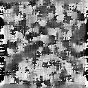

| .OPERATION: | CE OR | ; Contrast enhancement - Local Orientation |
| .INPUT FILE: | sav_pp | ; File name (input) |
| .OUTPUT FILE: | ceor | ; File name (output) |
| .CONFIDENCE OUTPUT FILE: | ceor_conf | ; Confidence file (output) |
| .SIGMA: | 2.0 | ; Amount of smoothing |
| .LOCAL OR RADIAL (L/R): | L | ; Orientation |
| INPUT | OUTPUT | CONFIDENCE OUTPUT |
|---|---|---|
|  | |
| sav_pp | ceor | ceor_conf |